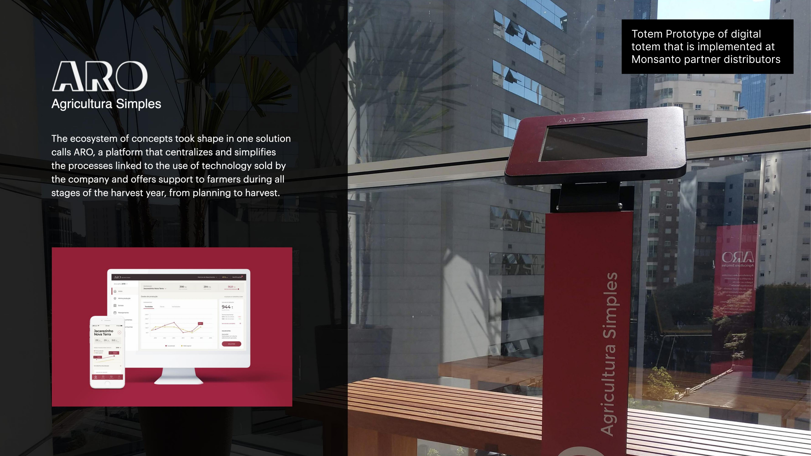
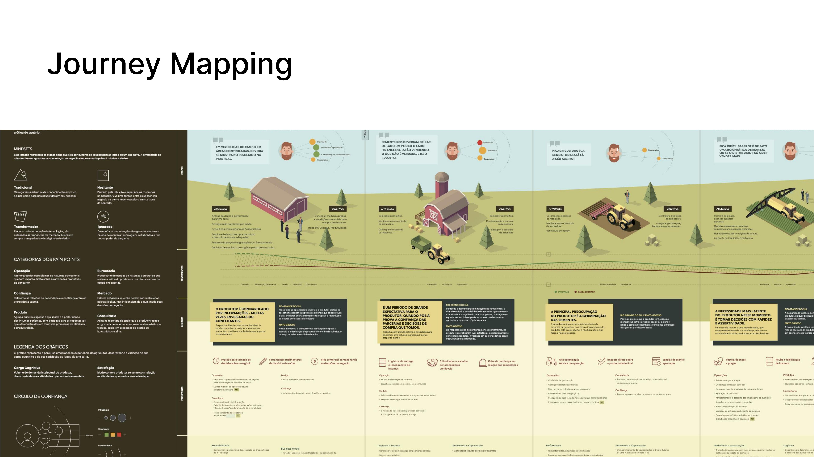
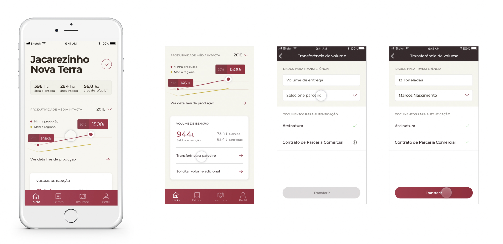

End-to-end service design for Brazilian soybean farmers. Extensive field research, journey mapping, and a platform — ARO — that supports farmers from planning to harvest.
Company
An American corporation and a leading producer of chemical, agricultural, and biochemical products, founded in 1901. In Brazil, Monsanto supplied seeds and agricultural technology to the country's vast soybean farming sector — one of the world's largest.
The Problem
Discovery
We conducted extensive on-site research with farmers, distributors, cooperatives, and Monsanto stakeholders — in two of Brazil's key agricultural states.
The research covered Mato Grosso (Sorriso) and Rio Grande do Sul (Passo Fundo) — representing very different farming profiles, scales, and relationships with the Monsanto brand. We needed to understand both.

Synthesis
From the research, we identified five interconnected service drivers — the systemic tensions that any solution would need to address to be truly effective.
The Solution
The ecosystem of concepts took shape in one solution: ARO — a platform that centralises and simplifies all processes linked to the use of technology sold by Monsanto.
ARO offers support to farmers during all stages of the harvest year, from planning to harvest. It addresses bureaucracy (digital contracts, simplified royalties), productivity (harvest tracking, volume management), and market awareness — all in one platform accessible via web, mobile, and a physical totem kiosk at distributor locations.
